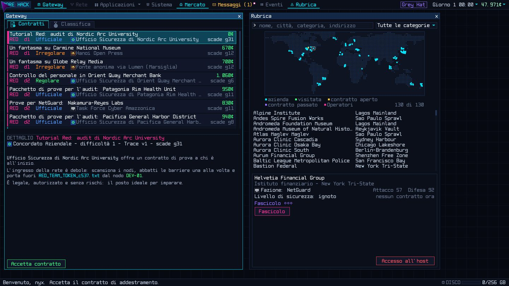
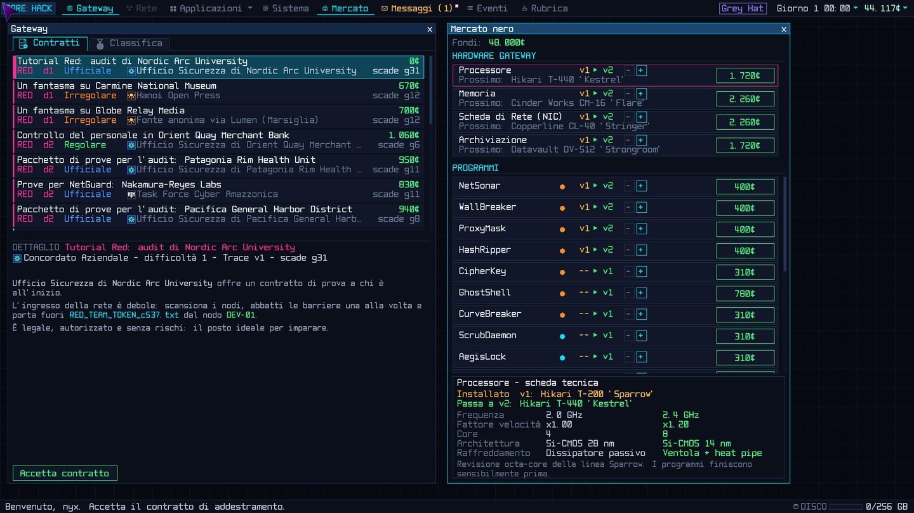

Hacking in tempo reale
Scansioni, barriere da abbattere, file da scaricare: tutto avviene mentre il trace sale. Ogni secondo di troppo ti avvicina a NetGuard.
BLACKOUT
Pianeta Terra, 2091. La Rete è di chi può permettersela.
Una simulazione di hacking cyberpunk in tempo reale. Sei un operatore indipendente con un vecchio gateway e un terminale: accetti contratti di intrusione e di difesa, costruisci una reputazione presso quattro fazioni e decidi, lavoro dopo lavoro, da che parte stare.
Versione 2.10.2 · Linux, Windows, macOS · italiano, english, français
Una simulazione di hacking cyberpunk completa, gratuita e senza contenuti a pagamento.
Scansioni, barriere da abbattere, file da scaricare: tutto avviene mentre il trace sale. Ogni secondo di troppo ti avvicina a NetGuard.
Gioca dal terminale con i comandi veri o dalle finestre con i pulsanti e le scorciatoie: sono due vie per le stesse azioni.
Ogni contratto genera una rete nuova: VLAN, host nascosti, backup, monitor, portali. Le aziende della Rubrica invece restano, e ricordano.
Intrusioni, furti, sabotaggi, distruzioni, consegne; oppure difendi una rete sotto attacco in diretta.
Concordato, NetGuard, Collettivo Lumen e Rete Nera: la reputazione con ognuna apre contratti, gateway e mercati diversi.
Ogni lavoro ha un peso morale. Le scelte cambiano le offerte, le email, le notizie e il corso della tua storia.
Decine di programmi in più livelli, un albero tecnologico, il Mercato Nero e programmi speciali come RevShell, KeyWraith, Devour e DarkHole.
Nove operatori rivali che si muovono nella Rete: indaga, scopri chi sono, costruisci fascicoli su persone e aziende.
Una trama che emerge lentamente da email, contratti e frammenti, fino a chi muove i fili da prima del Blackout.
Un server leggero per giocare con altri, in LAN o in Internet: messaggi, bonifici, intrusioni tra giocatori, audit, assedi e gare, tutto cifrato con TLS.
Tutorial guidati per ogni parte del gioco: interfaccia, intrusione, difesa, Rubrica, operatori e fascicoli.
Italiano, inglese e francese. Temi grafici Core, Introvert, Ami, IONic e Tensor, effetti schermo e animazioni regolabili.
Trent'anni dopo il Grande Blackout che spense la vecchia Internet, la Rete è un bene privato. Cavi, nodi e dati appartengono al Concordato Aziendale, che affitta l'accesso ai cittadini al metro.
NetGuard la sorveglia in nome dell'ordine. Il Collettivo Lumen la vuole libera e pubblica. La Rete Nera ci vive ai margini e ci fa affari. In mezzo ci sono quelli come te: un vecchio gateway, un terminale e nessun padrone.
Ogni contratto è una scelta. Entrare è facile. Decidere da che parte stare, quando nessuno guarda, è la parte difficile.
Accetti contratti di intrusione (red team) e di difesa (blue team), migliori il gateway, compri programmi sempre più potenti. Ogni lavoro ha un prezzo, in crediti (¢) e in coscienza. Non esiste una strada giusta: puoi essere un professionista rispettato, un mercenario, un idealista o un criminale. Le fazioni ricordano quello che fai, e la Rete dimentica poco.

Sotto i contratti di ogni giorno scorre qualcos'altro. Non ha un nome, e chi lo conosce ha smesso di pronunciarlo. Qualcuno, da molto prima del Blackout, muove i fili. Di tanto in tanto la Rete lascia cadere un frammento: un contratto che non dovrebbe esistere, un nome che nessun archivio ricorda. Se ti fai trovare dalla persona giusta, forse ti verrà offerto di guardare.
Quattro poteri si spartiscono la Rete. La tua reputazione con ciascuno, da -100 a +100, decide quali contratti ti vengono offerti, quali gateway si aprono e quanto vale il tuo nome.
Servire l'una significa quasi sempre tradire l'altra.

«Ordine, prima di tutto.»
La polizia della Rete non bussa mai alla porta, ma prende nota di tutto. Per chi collabora è un alleato paziente: contratti ufficiali, pagamenti puntuali, una perquisizione che diventa un semplice avvertimento. Per tutti gli altri è un occhio che non si chiude mai.
Cosa non dicono: dentro NetGuard circola un ordine mai scritto che dice di guardare altrove, ma solo in certi momenti e per certi clienti.

«Il mercato si regola da solo.»
Il consorzio delle megacorporazioni possiede i cavi, i nodi e i dati. È il cliente più ricco che troverai: test di penetrazione, audit e spionaggio industriale, con la stessa cortesia glaciale. Paga bene il lavoro e meglio il silenzio.
Cosa non dicono: qualcuno nelle sale del consiglio ha già deciso quanto costa tenere in vita la Rete.

«La Rete è di tutti.»
Hacktivisti, giornalisti, ex dipendenti e ragazzi con un'idea. Ti chiedono fughe di notizie, debiti da cancellare e dati da liberare, in cambio di compensi modesti e di una gratitudine sincera.
Cosa non dicono: le persone di Lumen hanno debiti, paure e punti deboli, e qualcuno fuori dal collettivo lo ha già notato.

«Qui non si fanno domande.»
Il mercato sommerso dei ricatti, dei sabotaggi e dei furti su commissione. I compensi sono i più alti della Rete e le conseguenze le peggiori. La parola data viene mantenuta con una puntualità che dovrebbe spaventarti.
Cosa non dicono: ti tratteranno con rispetto finché servirai, poi dipende.
Le fazioni non mandano subito i loro capi. All'inizio i lavori arrivano da sportelli, uffici e bacheche; con la reputazione (verso 25, 32 e 40 punti) si presentano i luogotenenti, tre per fazione, ognuno con il suo modo di lavorare. Alcuni sono rivali: lavorare bene per uno irrita l'altro. Da 50 punti il luogotenente di cui ti fidi di più ti presenta al capo, e partono le storie di fazione.
Le scelte morali si misurano su due assi: Legalità (dentro o fuori la legge) ed Etica (dalla parte degli esposti o di chi li sfrutta). Possono tirare in direzioni opposte. La tua posizione sul piano morale decide il tuo cappello.
| Cappello | Chi sei |
|---|---|
| White Hat | Operi nella legge e dalla parte di chi è esposto. Ti danno fiducia, ma i guadagni sono modesti. |
| Grey Hat | Infrangi regole quando serve, o taci quando conviene. Nessuna etichetta ti sta stretta. |
| Black Hat | Violi la legge e chi ci si trova in mezzo. Paga bene, finché dura. |
| Mercenary | La legge è dalla tua parte, la coscienza forse no. Esegui ordini che altri non vorrebbero firmare. |
Da 0 a 100, misura quanto NetGuard ti tiene d'occhio. Ogni operazione non autorizzata e ogni traccia lasciata la fanno salire; scende piano con i giorni. Quando è alta arriva la perquisizione: multa, sequestro di un programma o di un componente, perfino l'arresto.
Il gateway costa: ogni settimana si pagano connessione e affitto. Se i debiti superano una soglia il gateway viene ripreso e la partita finisce. Scegli i contratti anche in base a quanto puoi permetterti di rischiare.
I lavori compaiono nella finestra Gateway (F1). Ogni contratto ha un cliente, una scadenza, un grado di difficoltà da 1 a 20 e una classe che ne descrive la legalità.
| Classe | Significato |
|---|---|
| Ufficiale | Lavoro legale, contrattato apertamente. |
| Regolare | Autorizzato, con risvolti ambigui. |
| Irregolare | Senza autorizzazione, ma non dannoso. |
| Pericolosa | Senza autorizzazione e dannoso. |
| Segreta | Mai in bacheca: solo su invito, guadagnato con la reputazione. |

| Tipo | Cosa chiede il cliente |
|---|---|
| Furto | Portare via uno o più file, a volte enormi e su un archivio di backup. |
| Cancellazione / alterazione | Far sparire o correggere un file. Se in un archivio resta una copia, il file torna e il cliente paga meno. |
| Database | Lavorare sui record di una tabella DBT: alterarli, ripulirli o ripristinarli. |
| Host ignoto | Il cliente conosce il file ma non l'host: sta sugli host più profondi o su un host segreto. Un grado in più, e uno per ogni VLAN. |
| Consegna | Caricare sull'host indicato l'allegato del contratto, aggiungendolo o sostituendo un file con lo stesso nome. |
| Corruzione / blocco | Mettere fuori uso uno o più sistemi con un malware o un cryptolocker. |
| Distruzione | Cancellare per sempre uno o più host con Devour, insieme ai loro collegamenti. |
| Difesa | Tenere in piedi la rete di un'azienda sotto attacco, leggendo i log e bloccando gli attaccanti. |
Prima di accettare puoi prendere il contratto con una variante: una maggiorazione del compenso in cambio di una condizione in più, oppure metà o tutto il compenso in anticipo. Se fallisci, la reputazione persa si somma, e l'anticipo va restituito entro tre giorni.
I contratti Irregolari e superiori nascondono file extra (in ciano) e cose da fare durante l'intrusione: ripulire i log di un host, lasciare una RevShell, chiudere senza allarmi. Non servono al successo, ma ognuna paga un extra. Più avanti compaiono honeypot, piste in conflitto, amministratori automatici, collegamenti e host segreti.
Scegli un contratto, compri componenti e programmi, lasci passare il tempo.
Accetti un contratto, scegli quanti relay usare e premi Connetti.
Intrusione o difesa, in tempo reale: 30 secondi di gioco per ogni secondo vero.
Compenso, reputazione, sorveglianza e conseguenze morali. Il gioco salva da solo.

Una rete è un grafo di host: server di file, posta, database, workstation, caveau. Ogni host ha una o più barriere e si raggiunge solo da un host vicino già aperto. Gli Switch collegano più host e, nelle missioni VLAN, sono l'unico portale verso la rete sottostante.
| Passo | Cosa fai |
|---|---|
| 1 Scansiona | NetSonar rivela barriere, file e il programma che serve contro ciascuna. |
| 2 Apri | Firewall e proxy si disabilitano, password e curve ellittiche si forzano. Il programma deve avere almeno il livello della barriera. |
| 3 Prendi | Decifra, scarica, cancella o altera i file. |
| 4 Esci pulito | Cancella i log che hai lasciato e disconnettiti. |
Ogni azione fa rumore e il trace sale; non si raffredda da solo. A 100% sei tracciato: la missione fallisce e ne paghi le conseguenze.
| Mossa | Perché |
|---|---|
| Relay | Host intermedi che rallentano il trace, ma aggiungono latenza. |
| Blind | Acceca per un po' i monitor IDS prima di attaccare un host osservato. |
| Wipe | Cancella le tracce lasciate su un host, dopo l'obiettivo. |
| Calma | Più programmi in parallelo vuol dire meno velocità ciascuno. |
Una RevShell lasciata su un host ti fa rientrare da lì: la rete conserva il suo stato e il trace riparte da un quarto. Sulle reti permanenti delle aziende resta anche dopo che sei uscito, finché gli amministratori non la trovano. Alcune reti ne nascondono un'altra sotto: con LANScan e LANTraverse si passa da uno Switch portale alla VLAN sottostante. Dal grado 8 compaiono collegamenti e host segreti, che solo XMapper rivela.

Nei contratti di difesa leggi i log di sicurezza, scegli un indirizzo sospetto e lo blocchi (gli attaccanti cambiano indirizzo dopo un po'), isoli o ripristini host, ne sorvegli alcuni e, contro malware e ransomware, ripulisci e proteggi i sistemi. Al posto del trace c'è l'uptime dell'azienda: tienilo alto. Un difensore passivo perde sempre.
Chi attira troppa attenzione viene attaccato a casa sua. Durante un Controllo Sicurezza il gateway si difende con quattro anelli, che giri come programmi: BastionWall, DecoyProxy, WatchTower e CoreVault. Se il nucleo cade, perdi parte dell'archivio.
Il gateway è la tua base. Nella finestra Sistema (F4) vedi hardware, programmi, Microcode, relay e archiviazione; nel Mercato nero (F5) li migliori. Un upgrade hardware richiede 8 ore di gioco e un reboot del gateway.
| Componente | Effetto |
|---|---|
| Processore | Velocità di esecuzione dei programmi. |
| Memoria | Quanti programmi girano in parallelo. |
| Scheda di Rete | Velocità di trasferimento di file e programmi. |
| Archiviazione | Spazio per i dati scaricati. |
| Cloak | Quanti relay puoi concatenare e quanto rallenta il trace. |

Si parte con NetSonar, WallBreaker, ProxyMask e HashRipper al livello 1. Gli altri si sbloccano facendo crescere quelli che hai.
Software militare dell'era prima del Blackout, recuperato nelle missioni di alto livello: Argus, Bastion, Archangel, Excalibur. Livello 10, leggeri e silenziosi.
Software della Rete Nera, in vendita nel suo Bazaar: veloci e distruttivi, ma pesanti e instabili. DarkHole, il Devour nero, distrugge in silenzio e si allarga all'host vicino.
Tutto si fa col mouse, ma il terminale (F3 o Ctrl+T) accetta le stesse azioni dei pulsanti. help elenca ciò che il contesto ti permette; Tab completa comandi, nodi e file.
| Comando | Cosa fa |
|---|---|
| scan <nodo> | rivela barriere e file |
| break <nodo> [n] | abbatte una barriera |
| decrypt <nodo> <n> | decifra un file |
| get / rm / edit | scarica, elimina, altera |
| blind / wipe <nodo> | acceca il monitor, cancella i log |
| put <nodo> <n> | carica un file dallo storage |
| revshell <nodo> | lascia una porta aperta |
| lanscan / traverse | trova e attraversa una VLAN |
| corrupt / lock | corrompe o blocca un sistema |
| devour <nodo> | distrugge l'host per sempre |
| veil | avvia o ferma TraceVeil |
| tasks / cancel <id> | compiti in corso, annulla |
| connect shell [host] | rientra da una RevShell |
| attach | riscarica l'allegato di una consegna |
| Tasto | Azione |
|---|---|
| F1 … F8 | Gateway, Rete, Terminale, Sistema, Mercato, Messaggi, Eventi, Difesa |
| F9 / F10 / F11 | salvataggi, musica, schermo intero |
| Esc | Opzioni; chiude finestre e dialoghi |
| Spazio | pausa (in missione) |
| 1 / 2 / 3 | velocità x1, x2, x4 |
Con la finestra Rete in primo piano le lettere agiscono sul nodo selezionato, come i pulsanti.
| Tasto | Azione |
|---|---|
| s | scansione |
| b | barriera più esterna |
| f p c e | Firewall, Proxy, Password, Curva ellittica |
| m · l | acceca il monitor · cancella i log |
| d · r | scarica un file · RevShell |
| k a n t i u | KeyWraith, ArpScan, LANScan, LANTraverse, Inspect, FileUndeleter |
| v | TraceVeil |
| Tab · Canc | nodo successivo · annulla l'ultima operazione |
corehack-server tiene gli account, i messaggi, i bonifici tra giocatori e le azioni competitive: intrusioni, audit delle banche, assedi e gare. È un solo programma senza dipendenze, che gira anche su un Raspberry Pi. In LAN e in Internet si usa allo stesso modo.
Tutto il traffico è cifrato con TLS. Al primo avvio il server crea un certificato autofirmato e ne stampa l'impronta: il gioco la mostra al primo collegamento, da confrontare con quella del server. Per un server pubblico va bene anche un certificato di un'autorità, come Let's Encrypt.
Negli assedi tra giocatori chi attacca ha una carica che si riempie nel tempo: lancia gli attacchi dal vivo dalla console oppure prepara un piano, lo prova contro un difensore automatico e lo manda.
Il pacchetto contiene il binario per il tuo sistema, già con tutti i dati. Su Linux servono le librerie grafiche e audio di sistema; se OpenGL non parte, il gioco ripiega da solo su un renderer software.
| Linux | Windows | macOS | |
|---|---|---|---|
| Sistema | 64 bit, X11 o Wayland (XWayland), con le librerie qui sotto | Windows 10 o 11, 64 bit | macOS 12 Monterey o successivo |
| Processore | x86-64 dual core (pacchetto ARM64 disponibile) | x86-64 dual core (pacchetto ARM64 disponibile) | Apple Silicon (pacchetto Intel disponibile) |
| Memoria | 4 GB di RAM | ||
| Grafica | OpenGL 3.2 (altrimenti renderer software) | DirectX 11 o OpenGL 3.2 | Metal |
| Schermo | 1280×720 o superiore (consigliato 1600×900) | ||
| Disco | 150 MB liberi, più lo spazio dei salvataggi | ||
| Rete | non serve per giocare da soli; solo per il multigiocatore | ||
| Distribuzione | Pacchetti |
|---|---|
| Debian / Ubuntu | sudo apt install libgl1 libglx-mesa0 libgl1-mesa-dri libx11-6 libxcursor1 libxrandr2 libxi6 libxinerama1 libxxf86vm1 libasound2 (da Ubuntu 24.04: libasound2t64) |
| Fedora / Rocky / Alma | sudo dnf install mesa-libGL mesa-dri-drivers libX11 libXcursor libXrandr libXi libXinerama libXxf86vm alsa-lib |
| Arch / Manjaro | sudo pacman -S mesa libglvnd libx11 libxcursor libxrandr libxi libxinerama libxxf86vm alsa-lib |
Serve Go 1.25 o successivo; le dipendenze sono incluse, quindi non serve la rete. ./build_all.sh compila gioco e server per ogni piattaforma; ./build.sh host solo per il sistema in uso. Su Linux servono anche i pacchetti di sviluppo:
| Distribuzione | Pacchetti |
|---|---|
| Debian / Ubuntu | sudo apt install build-essential pkg-config libgl1-mesa-dev xorg-dev libasound2-dev |
| Fedora / Rocky / Alma | sudo dnf install gcc pkgconf-pkg-config mesa-libGL-devel libX11-devel libXcursor-devel libXrandr-devel libXi-devel libXinerama-devel libXxf86vm-devel alsa-lib-devel |
| Arch / Manjaro | sudo pacman -S base-devel pkgconf |
Il gioco è in italiano, inglese e francese; la lingua si sceglie alla prima configurazione o dalle Opzioni. Dalle Opzioni (Esc) regoli audio, luminosità, tonalità dell'interfaccia, effetto schermo, animazioni, difficoltà del trace e tema grafico: Core, Introvert, Ami, IONic e Tensor.
I manuali completi, in PDF, aggiornati alla versione 2.10.2.
| # | Consiglio |
|---|---|
| 1 | Comincia dal contratto di addestramento: è legale, autorizzato e senza rischi. |
| 2 | Scansiona sempre prima di agire: NetSonar rivela barriere e file di un nodo. |
| 3 | Un programma deve avere livello almeno pari a quello della barriera che affronta. |
| 4 | Dopo l'obiettivo cancella i log: ogni traccia lasciata aumenta l'attenzione di NetGuard. |
| 5 | Tieni da parte i soldi per le bollette settimanali prima di spenderli in upgrade. |
Core:Hack è il lavoro di una persona sola, nelle ore libere: codice, storia, musica e manuali. Se il gioco ti piace e vuoi che continui a crescere, puoi offrire un caffè o lasciare quello che ritieni giusto.
Nessun obbligo, nessun contenuto a pagamento: il gioco resta lo stesso per tutti.